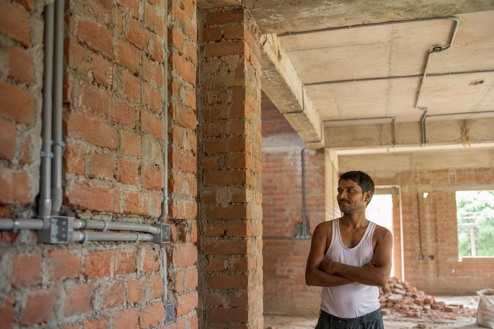

Why Duplicate Finolex Wire Is Increasing So Much in Bangalore

Duplicate Finolex wire is increasing in Bangalore because the incentives all point the same way: Finolex is the brand most buyers ask for by name, the city is building faster than any authorised chain can supervise, genuine wire runs on a 3 to 5% margin that leaves no room for the discounts buyers are offered, and most people verify only the outer QR code, which a refilled carton still passes. Counterfeiting a trusted brand in a booming market with weak verification is simply profitable, and it will keep growing until buyers check both codes and buy from authorised sellers.
1. Finolex is the brand people ask for, so it is the brand worth copying
Nobody counterfeits an unknown brand. In Bangalore, "Finolex" has become shorthand for "good wire" among owners, electricians and contractors, and a large share of house-wiring lists say Finolex by name. That demand is the counterfeiter's market. The premium a buyer will pay for the name is the counterfeiter's margin.
2. The city is building faster than anyone can supervise
New layouts from Yelahanka to Anekal, villa projects on Sarjapur Road and Kanakapura Road, apartment towers in Whitefield and Electronic City, and thousands of individual houses on 30x40 and 40x60 sites. Every one of them needs wire, most of them need it this week, and a large share are supervised by a contractor rather than the owner. Demand that outruns the authorised chain gets filled by whoever has stock, and by definition nobody checks where that stock came from.
3. The margin structure makes discounts impossible and fakes irresistible
Genuine branded wire is a 3 to 5% margin business for the distributor. A shop cannot offer 15% off genuine stock and survive. But a shop offering 15% off a coil that cost it half the genuine price is doing very well. The discount that buyers are trained to look for is precisely the thing genuine stock cannot provide, so the more price-sensitive the market gets, the more room there is for the duplicate. The price test covers this in detail.
4. The commission economy chooses the shop for you
Electricians and contractors are routinely paid a commission by the shop they bring business to. That is not illegal and it is not always harmful, but it means the person choosing where your wire comes from is paid more when it comes from a shop with higher margins, and the highest margins are on duplicates. With-material contracts, where the contractor supplies everything for a fixed price, sharpen the incentive further: every rupee saved on wire is the contractor's. The contractor fraud guide explains how it plays out on site.
5. Refilled cartons defeat the check most people do
The single biggest technical reason for the rise is that buyers have learnt to scan the outer QR and stop there. A genuine carton, emptied and refilled with duplicate wire, passes that scan. The inner QR, reachable only after the carton is opened, fails, but almost nobody scans it. Counterfeiters know this, which is why genuine empty Finolex cartons have a resale value of their own. Read the inner QR guide and the "genuine product" meaning post.
6. Anonymous resale has become easy
Wholesale markets have always existed, but now stock also moves through classifieds, WhatsApp groups, marketplace listings and multi-supplier delivery platforms, all of which put a screen between you and the person who first put the coil in the box. When the chain of custody is invisible, a duplicate travels as easily as a genuine coil. It is not that any of those channels is dishonest; it is that none of them can show you a single authorisation for the specific carton you receive.
7. Copper prices give the discount a cover story
Copper moves every week and wire prices follow, so a buyer who sees two very different prices for "the same" Finolex coil is told it is old stock, or a bulk deal, or last month's rate. Sometimes that is true. Mostly, a gap of 15% or more is not copper. The copper rates explainer shows how much genuine prices actually move.
What this means for you
You cannot fix Bangalore's market. You can make your own house immune to it with three habits:
- Buy from an authorised seller. Certificate first, then anything else. The authorised dealer post explains why.
- Scan both codes, at your site, before paying. Outer on the label, inner inside the box, every carton.
- Treat a big discount as evidence, not luck. Compare against the published net prices on the buy Finolex wires page.
If you already have wire and are unsure about it, bring it to us or send photos. The free check is exactly for that.
The check that settles it, wherever you buy
Every Finolex carton carries two QR codes. The outer code is printed on the carton label next to the size, grade, length and batch number; scanning it opens Finolex's own verification page and confirms the carton is registered. The inner code is inside the box and can only be reached after opening it; it confirms the contents are what Finolex packed. Both must pass. A genuine carton can be emptied and refilled, in which case the outer code still verifies and only the inner code fails. Do both scans at your own site, before paying. The step-by-step guides are here: outer QR and inner QR.
Cross-check us. Send your list to WhatsApp 88676 76700 for an itemised quote within 60 minutes and use it as your reference price anywhere in Bangalore. There is no obligation to buy from us — plenty of people ask purely to check someone else.
Frequently asked questions
Why is there so much duplicate Finolex wire in Bangalore?
How do counterfeiters get past the Finolex QR code?
Does a discount on Finolex wire mean it is fake?
Why do electricians recommend particular shops?
Is wire from online platforms and marketplaces more likely to be duplicate?
What is the simplest way to protect my house from duplicate Finolex?
Ready to order for your home?
Upload your wiring list for an instant quote — 100% original material, free next-day delivery across Bangalore.